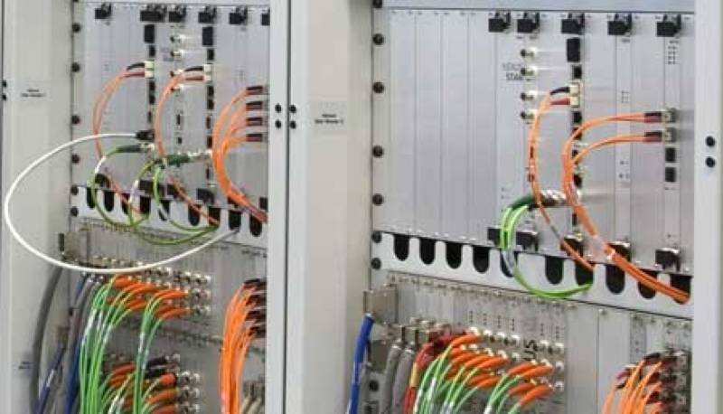
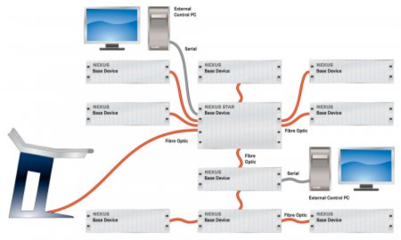
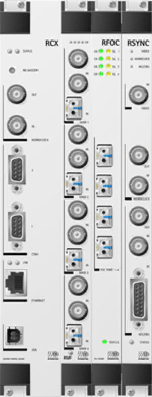
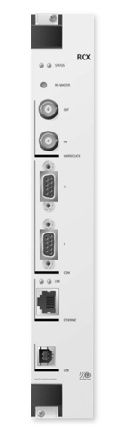
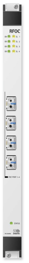
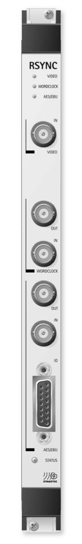
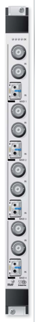

STAGETEC
AURUS Platinum
AVATUS
CRESCENDO Platinum
AURATUS
ON AIR flex
NEXUS
NEXUS Star
RIEDEL
RIEDEL-INTERCOM
Artist
Performer
Acrobat
Bolero
Tango
接口
内通面板
头戴系统
Motorola
Hytera
RIEDEL-MEDIORNET
MediorNet Compact
MediorNet MicroN
MediorNet MetroN
MediorWorks
RockNet
STX-200
配件
代理产品
解决方案
技术支持
特性
参数
板卡
案例
数字音频网络核心路由系统
4096 x 4096个路由交叉点
每台Star最多与31台NEXUS基站设备相连
NEXUS Star设备间可级联
带同步的信号处理功能，多重同步源选择

背板具有21个卡槽（每个4HP），其中包括16个输入输出卡槽
延时时间恒定，为6个采样
节省空间（19寸6RU标准）
创新性的高速路由单元，传输速率为12Gbps，总线时钟频率为2 x 100MHz
采样频率：44.1，48，88.2，96kHz（取决于设置）
全局可调满刻度电平（0dBFS=0对应22/24dBu模拟电平）

标准接口，未来可扩展
通过PC设置，分布式控制，独立于电脑运行
（参数保存在NEXUS网络中）
图形化的控制程序
支持多重冗余电源
始终执行自检程序
可热插拔
无间断的信号重新路由过程（需要冗余光纤连接）

基站设备
概述
NEXUS Star拥有19寸的主机箱和TDM总线的背板，配以板卡、控制板卡以及电源单元等。可选配冗余电源。接口板卡则是根据用户要求来配置。
配置
19寸主机（如需要可选购航空箱和机架）
1个前面板行
RCX控制板卡和路由矩阵
2到4个背板电源单元（包括最多2个冗余电源），专属系统配置
RFOC和RMF输入输出接口板卡（根据需要配置）
卡槽
间距
4HP（20.32mm）
前面板卡槽数
21（其中含16个输入输出卡槽）
电源
工作电压
90-264VAC
交流电频率范围
47-63Hz
功耗
100W（最大）/单元
尺寸
高度
约265mm（6U）
宽度
大约482.6mm/19’’,84HP
深度
大约470mm（包括端口但不含把手）
运行和控制
可靠性
每台基站设备可动态指派256个时隙
最多可安装4组冗余电源
可热插拔
持续性内部自检流程
故障情况下信号重新路由不间断
冗余的控制和路由板卡，冗余的总线系统
控制电脑
标准PC电脑，使用串行接口、以太网口或USB端口连接
转播车
中央电视台A1高清转播车
中央电视台A2高清转播车
中国传媒大学录音车
山西电视台高清车
湖北电视台环绕声录音车
湖北电视台16讯道高清转播车
教育台16讯道高清转播车
演播室
央视1号演播厅及第6演播室改造
央视现址1号演播大厅及第9演播室
央视新址C01群演播室
央视新址C06群演播室
央视新址E11群演播室
央视新址E14群演播室
天津电视台2500平米演播剧院
深圳电视台融合新闻中心
安徽电视台1000平米演播室
安徽电视台1200平米演播室
湖北电视台2000演播室
湖北电视台600新闻演播室
湖南台1400演播室
江苏台420演播室
杭州电视台1000演播室
杭州电视台600演播室
剧场剧院
丝绸之路会展中心
江苏大剧院
哈尔滨大剧院
上海大剧院
无锡大剧院
常熟服装城演艺中心
青岛大剧院
合肥大剧院
呼伦贝尔大剧院
鄂尔多斯大剧院
天津津湾大剧院
中国音乐学院音乐厅
大型活动与大型场馆
抗日战争胜利70周年大阅兵项目
国庆60周年阅兵与庆典
国家体育场
总后礼堂
大连国际会议中心
中办政治局常委会议室
录音棚
天津广播电视台文艺录音棚
中国歌剧舞剧院录音棚
中国音乐学院录音棚
音频处理

RCX
控制板卡

RFOC
光纤接口板卡

RSYNC
光纤接口板卡

RMF-BLC
MADI I/O板卡
+
查看更多
相关下载
NEXUS Star产品彩页.pdf
需要更多资料?
扫描二维码 关注STAGETEC公众号